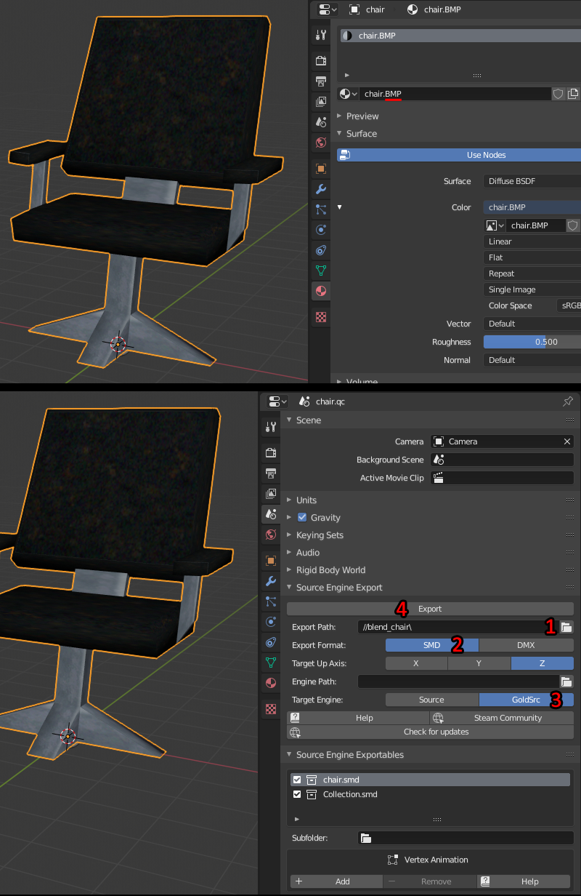
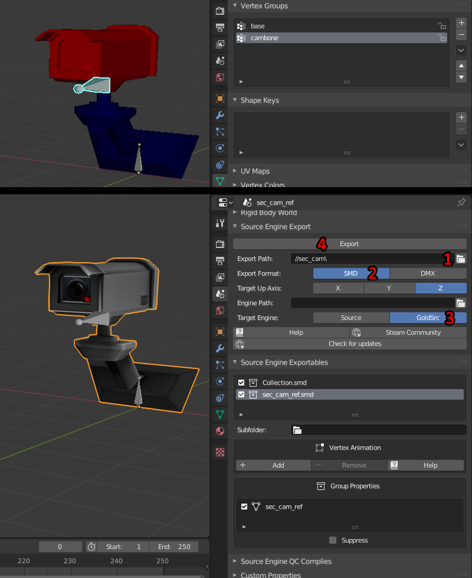
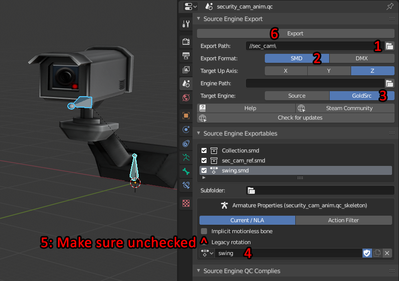
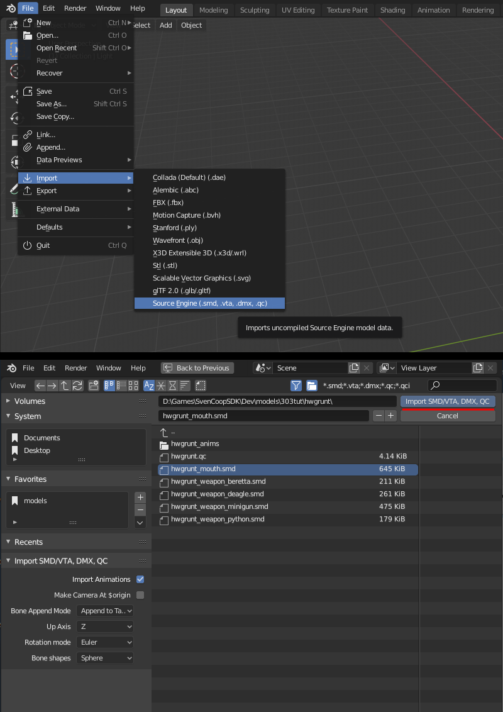
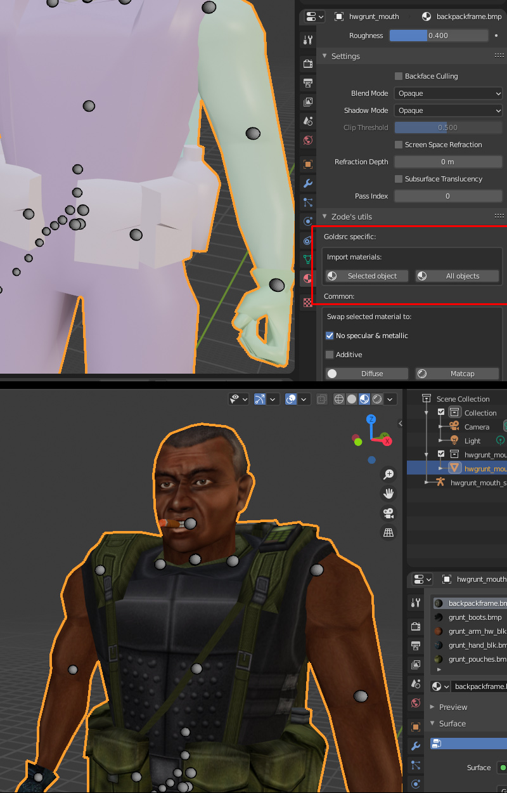
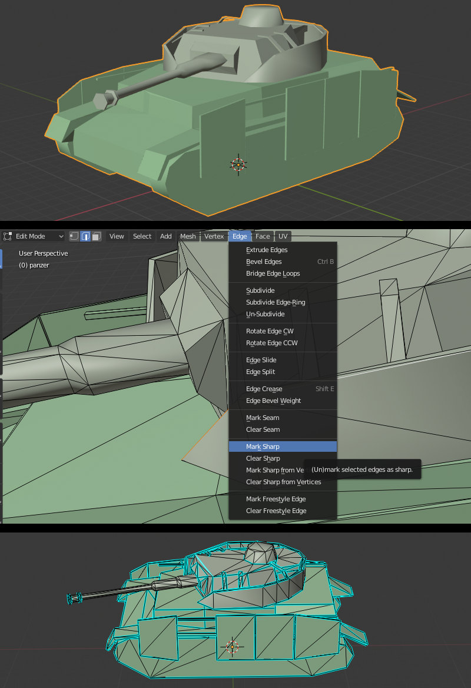
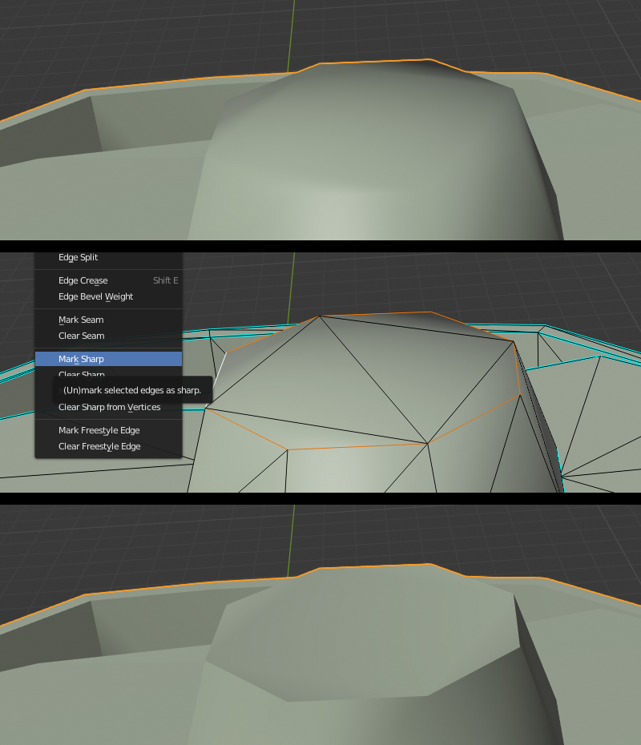
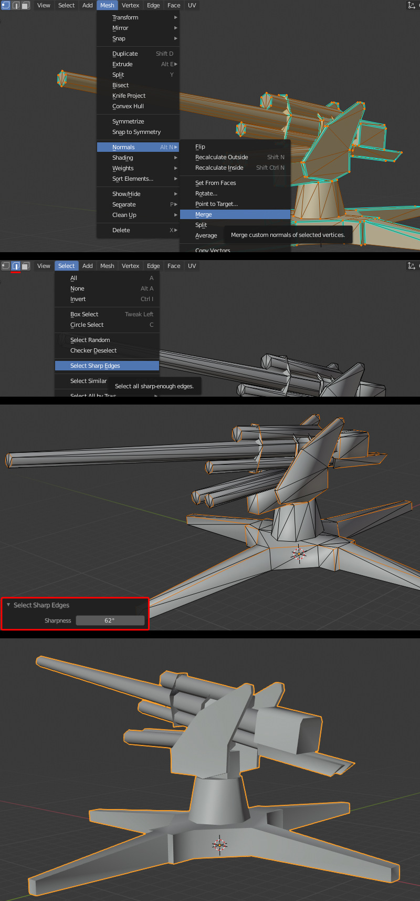
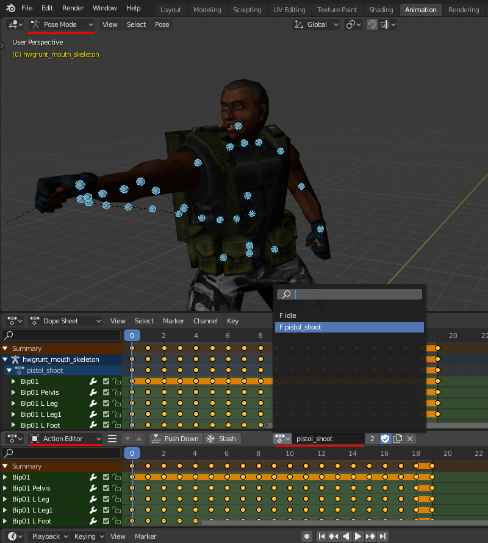

Blender

Blender has had Source engine support for years, however it has recently been able to do GoldSrc exports via the GoldSrc option in BlenderSourceTools. You can download these tools here: BlenderSourceTools Page. This guide also will use Zodes BlenderUtilities to speed up material imports. Zones BlenderUtilities Github
When working in Blender the default grid is rather small for GoldSrc scale, so I highly recommend in your Viewport Overlay to set your Guides Scale to 8, and Subdivisions to 4.
Make sure that you have applied your transforms to your mesh with ctrl-A or else you may have a wrong scale on export that does not match what you have. This is a similar situation compared to 3dsmax's "Reset Xform". Lastly, exporting supports only ONE armature.
Jump to Exporting Animations Jump to Exporting Meshes With Armature Jump to Importing Meshes Jump to Smoothing Editing Jump to Importing Animations Jump to General Blender tips & Bonus Tutorials
Exporting Static Reference Mesh (No Armature)
1)In the material tab check your materials and make sure the each material name ends with .bmp.
2) Switch to your Scene tab, scroll down to "Source Engine Export" and first set your export path to your folder containing your textures. Then set export format to SMD, then your target engine to "GoldSrc". Lastly press "Export" button. Your model origin will be at the mesh origin point.

Exporting Reference Mesh With Armature
1)As before, first check your materials tab and make sure the each material name ends with .bmp.
2) Make sure that all your vertex weights are 1 or 0 and no blending between bones or duplicate weights (In weight paint mode everything should look either red or blue). A tip for those who model using weight paint brush: set your option to "Auto Normalize", your weight & strength to 1.0, and your "curve" to the furthest to the right preset which is the bar line icon "MAX" to eliminate any falloff. You can also go to Edit -> and tick of "Lock Object Modes" and then set up pose mode and weight paint so you can switch between bones with CTRL+Click.
3)Switch to your Scene tab, scroll down to "Source Engine Export" and first set your export path to your folder containing your textures. Then set export format to SMD, then your target engine to "GoldSrc". Lastly press "Export" button.

If you get the error "WARNING: X verts on "smd_name" have multiple weight links. GoldSrc does not support this!" then you need to fix your vertex weights. There is a quick threshold method you could try which is going to paint mode, check auto-normalize then use Quantize and Limit Total on all groups with "1" as your paramaters.
Continue to Compiling
Exporting Sequence Animation
1)As before, first switch to your Scene tab, scroll down to "Source Engine Export". By default your Blender Source tools will put your armature animations in the "Source Engine Exportables" list with the subfolder placement directory called anims\. Also by default both mesh and the animation exports but if you only want the animation to export just uncheck the mesh exportable in the list.
2) First set your export path to your folder containing your textures.Then set export format to SMD, then your target engine to "GoldSrc". In the "Armature Properties (Armature)" window rename your armature action to whatever you want. In my example I named it "Swing". Then in the same area there is a default checked box called "Implicit Motionless Bone". Uncheck it before exporting since it causes heiarchy issues especially with existing armatures/imports. Lastly press "Export" button.

It should be noted that you are not confined to animating at blenders default 24 keyframes frames per second, as you can set different speeds in your QC compile script. So for example if you just need a very simple idle sequence you can set your Blender render tab to to custom "Framerate" to say 12fps, animate your sequence then set 12fps in your QC script on compile. This will play in game and interpolate the frames accordingly. You can play with tweaking speeds either on the 3deditor side and/or the QC script side.
If you want to or need to remap time/frames, you cannot simply use the "Time Remapping" function in blender, you have to manually scale the keys in the dope sheet editor. This is done by going to dope sheet, setting the blue playhead to your first frame. Then pressing "A" to select all then "S" to scale the keyframes and watch the keyframe numbers.
Continue to Compiling
Importing Meshes
1)Go to file > Import Source Engine and choose your SMD (don't worry about the name "source engine" the tools have GS compatibility). On the bottom left there is some customization options but for the most part default settings will be fine.
NOTICE: There is currently a bug with BST where some mesh imports will look fine, but have had their bones rotated wrong, so any animation loading will cause mesh parts to flip in wrong directions. This can also be seen on mdl compile. A temporary fix ive come up with is as follows:
1) import ref mesh, this will look fine but of course is bone flipped
2) in notepad open the ref mesh smd, and copy everything from the start all the way till the end of the skeleton block end (do NOT go into "triangles".)
Paste that into a new document and save as "posefix.smd"
3) back in blender import "posefix.smd". It will now look broken, but go into pose mode, select all then "apply pose as rest pose".

2)Your smd is now imported, but you need to link your materials to the BMPs. This will be done with Zodes Blender Utilities. Be sure to save your blend file in the dir that has your BMPs, then use the Zode easy import button on one or all meshes. This works great for if doing whole QC import as well. The utilities also supports Chrome and additive textures and you can swap some to others for Eevee display.
 Things to note:
- If your model has multiple mesh SMD's, just import each one as before and it will automatically join them to the skeleton
- Switching to cycles and enabling "Node Wrangler" Addon makes setting up materials in node view easier if needed
Continue to Compiling
Smoothing editing
Id like to take a moment to also explain some things about smoothing/sharp vertex normals for imports. BlenderSourceTools automatically imports model vertex normals as "custom split normal data", but you can fine tune it by marking edge seams to sharp or smooth when needed. Ill show some basics.
1) To begin editing smoothing, switch to edit mode and with edge selection select any sharp edge and mark as sharp. This will make all sharp edges show up in blue for visual clarity.

2) Now as an example of editing our smoothing on an import I am making the top of this part sharp. I can select the ring of edges but also a very useful tip is converting face selections to edge selections. This is done by making a bunch of face selections, then switching to edge mode, then in the 3D view header Select > Select Loops > Select Boundary Loop. When you have done your selection mark it as sharp. Now you can see the results of the edit.
You can also select any sharp marked blue line and go to "Edge > Clear Sharp" to remove sharpness.

3) The last thing I want to mention is if you have an imported model that has everything smooth and/or want to do all your smoothing from scratch, do the following: First go to Edit Mode then select the whole model and select Mesh > Normals > Merge from the menu.
Now deselect everything and make sure Edge select is active. Then go to Select > Select Sharp Edges, open the settings menu on the bottom left to set the angle. For this I chose 62 degrees. Then mark the edges as sharp. Now you have sharp edges in an easily editable form that you can add or remove.

(If you are asking the question "why not just use auto smooth angle to set hard edges?" its because I found that way you cannot easily set auto set hard edges back to smooth, only smooth to hard. This way using edge mark angle I found gives much greater control.)
Continue to Compiling
Importing Sequence Animation
1)Go to file > Import Source Engine and choose your SMD as before, and select a sequence SMD. BlenderSourceTools will automatically create a new Action for each sequence SMD imported. You can switch between your imports by opening up dope sheet and switching to action editor and moving the selection rollout. Each sequence is also automatically named.

One thing to note currently SMD tools exports the whole range of the animation. You can get around this with QC command $frame on the compile side, or deleting frames in the dope sheet.